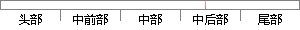

当创建的任务进入就绪状态后，会返回到create_task()函数中继续运行，此时create_task()函数会判断系统是否已经在运行，如果系统已经运行，则会进入任务调度函数进行任务调度。
片段位置图

相似结果
1
原句片段： 当创建的任务进入就绪状态后，会返回到create_task()函数中继续运行，此时create_task()函数
相似片段： 只要是在您会使用任务构造函数的地方都可以使用 create_task。 主要为了方便而提供,因为它允许在创建任务时使用 auto 关键字。 template< typename _Ty > __...
| 标题 | 《create_task 函数》 |
| 对比库 | PaperRater云论文库 |
| 网址 | http://msdn.microsoft.com/zh-cn/library/windows/apps/hh913025.aspx |
| 相似率 | 68.18% （轻度抄袭） |
2
原句片段：会判断系统是否已经在运行，如果系统已经运行，则会进入任务调度函数进行任务调度。
相似片段：将从新开始运行任务程序,还是从调度以前的断点处运行...操作系统将在下面情况中进行任务调度:调用API函数(...OSSched()判断是否切换,如果需要切换,则此函数调用OS...
| 标题 | 《uCOS51任务调度工作原理_免费下载_百度文库》 |
| 对比库 | PaperRater云论文库 |
| 网址 | http://wenku.baidu.com/link?url=e4_uUxZUW6rKKb3E_KTXTl3w35lT90tmdkIN5hSkCZ6B86jmI53LcdCx2iYHTm-Xcb_pFU31EZFU2BBpDkseq9OdzsExjSltuPffrUSQOfm |
| 相似率 | 74.29% （轻度抄袭） |
※ 片段修改建议 ※
近似词参考：- 继续：连续 继承
- 已经：已
- 进行：举行
- 系统：体系
- 任务：使命 义务
- 状态：状况
- 是否：是不是
- 调度：调剂 调理
- 创建：建立 创立
- 就绪：停当
- 判断：判定 果断
- 如果：若是 假如 要是
系统自动生成语句： 当建立的使命进入停当状况后，会返回到create_task()函数中连续运行，此时create_task()函数会判定体系是不是已在运行，若是体系已运行，则会进入使命调剂函数举行使命调剂。
注：本片段修改建议为系统自动生成，仅供参考。